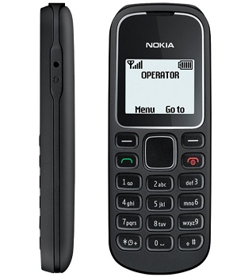

Nokia-1280
Артикул: 344989564
Удивительное дело, но 1000 серия всегда была аскетичной в том, что касается цветовых решений. Выбор был ограничен черным цветом, изредка модели разнообразили серебристыми вставками, либо еще как-то. В 1280 изначально предлагается четыре цветовых решения – черное, синее, серое и красное. Все цвета выглядят довольно интересно.

Nokia-3230
Артикул: 3213479
Трёхдиапазонный мобильный смартфон, анонсированный фирмой Nokia 2 ноября 2004 года. Используется платформа Series 60. Для привлечения внимания аудитории компании Nokia требовался телефон с функциями, которые будут востребованы и выделят модель среди своей серии (Nokia 7610 и Nokia 6670).Самый доступный смартфон того времени....
Motorola-c116
Артикул: 344029
Удивительное дело, Motorola была пряммым конкуретом Nokia?j,обладала той же аскетичностью в цветовых решениях. Выбор был ограничен черным цветом, изредка модели разнообразили серебристыми вставками, либо еще как-то. Motorola изначально предлагается три цветовых решения – черное, синее и серое . Все цвета выглядят довольно интересно...
Siemens-a50-55
Артикул: 345027р
Siemens была пряммым конкуретом Nokia и ,обладала той же аскетичностью в цветовых решениях. Выбор был ограничен черным цветом, изредка модели разнообразили серебристыми вставками, либо еще как-то. Motorola изначально предлагается три цветовых решения – черное, синее и серое . Все цвета выглядят довольно интересно, а так же радует цена...
Irbis sf-50
Артикул: 311025
Заряд держит 3-4 дня, по крайней мере у меня. Хотя я целыми днями не болтаю. С таким аккумулятором это совсем не сколько. После любого нажатия на кнопки ожидание 1-2 секунды. Тугой до бесячки. Разные списки звонков у 1 и 2 симки. Куча ненужных нажатий на кнопки даже просто позвонить при том, что тормозит не реально. При написании смс курсора...).
Dexp b3
Артикул: 3455237
Сотовый телефон DEXP Larus B3 в бордово-красном корпусе выполнен в форм-факторе моноблока и отличается простотой управления, лаконичностью дизайна, компактными габаритами. Он снабжен физической клавиатурой, которую многие пользователи по-прежнему предпочитают сенсорному экрану. Практичное мобильное устройство весом 117.5 граммов...